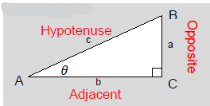
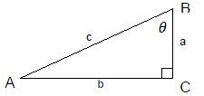
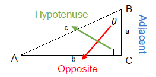
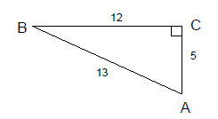
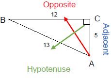
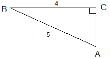
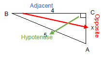
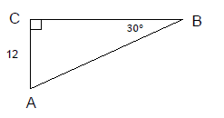
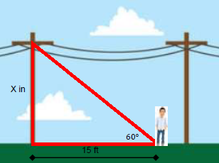

Chapter 5: Geometry
Section 5.4: Right Triangle Trigonometry
Learning Objective(s)
- Identify opposite, adjacent, and hypotenuse in right triangles.
- Use trigonometric ratios for the three basic trigonometric functions.
- Use trigonometric ratios to solve real-world problems.
Introduction
When it comes to geometry and triangles, one of the most widely used methods for finding missing sides or angles is trigonometry — the measurement of triangles. Trigonometry is frequently used in navigation, especially in ships and airplanes, as well as in building trades.
We have already used ratios to find missing sides in similar triangles. Trigonometry extends this idea by allowing us to find both missing sides and missing angles using ratios of the sides of a right triangle.
Opposite, Adjacent, and Hypotenuse
With the Pythagorean Theorem we learned that every right triangle has two legs and a hypotenuse. In trigonometry the legs take on the names adjacent and opposite, depending on which angle we are focusing on. The hypotenuse is always the side across from the right angle.
- The opposite side is the side directly across from the angle of interest.
- The adjacent side is the side directly next to the angle of interest (that is not the hypotenuse).
- The hypotenuse is always across from the right angle — it is the longest side.

In \(\triangle ABC\), side \(a\) is opposite \(\angle A\), side \(b\) is opposite \(\angle B\), and side \(c\) is the hypotenuse opposite the right angle.
The labels change depending on which angle is the angle of interest.
Note: Lower case letters always denote sides, and capital letters always denote angles.
Example 1
Using the triangle below, identify the Opposite, Adjacent, and Hypotenuse relative to \(\angle A\).

Solution
Relative to \(\angle A\):
- Side \(b\) is opposite \(\angle A\).
- Side \(c\) is opposite the right angle, making it the hypotenuse.
- Side \(a\) is the remaining side — the adjacent side.

Three Basic Trigonometric Functions
There are three fundamental trigonometric ratios: Sine (abbreviated sin), Cosine (abbreviated cos), and Tangent (abbreviated tan). All three are defined as ratios of the sides of a right triangle relative to an acute angle.
Trigonometric Ratios
Let \(\theta\) be an acute angle in a right triangle. Then:
Sine
\[\sin\theta = \frac{\text{Opposite}}{\text{Hypotenuse}}\]Cosine
\[\cos\theta = \frac{\text{Adjacent}}{\text{Hypotenuse}}\]Tangent
\[\tan\theta = \frac{\text{Opposite}}{\text{Adjacent}}\]Memory Devices
Two popular ways to remember the trig ratios:
- SOH-CAH-TOA — Sine = Opposite/Hypotenuse, Cosine = Adjacent/Hypotenuse, Tangent = Opposite/Adjacent
- Oscar Had A Head Of Apples — Opposite/Hypotenuse, Adjacent/Hypotenuse, Opposite/Adjacent
Example 2
Use the triangle below to identify the three trigonometric ratios for \(\angle A\).

Solution

Step 1: Identify Opposite, Adjacent, and Hypotenuse relative to \(\angle A\).
- Opposite = 5 (side BC, across from \(\angle A\))
- Hypotenuse = 13 (side AC, across from the right angle)
- Adjacent = 12 (side AB, next to \(\angle A\))
Step 2: Write the three ratios.
\[\sin A = \frac{\text{Opp}}{\text{Hyp}} = \frac{5}{13} \qquad \cos A = \frac{\text{Adj}}{\text{Hyp}} = \frac{12}{13} \qquad \tan A = \frac{\text{Opp}}{\text{Adj}} = \frac{5}{12}\]When applicable, all ratios should be reduced to lowest terms.
Notice that sine and cosine are never greater than 1. Sine and cosine are cyclic functions whose values will always be between −1 and 1. If you get a ratio greater than 1 for sine or cosine, you have made an error.
Example 3
Use the triangle below to identify the three trigonometric ratios for \(\angle A\).

Solution
Step 1: Find the missing side using the Pythagorean Theorem.
\[a^2 + b^2 = c^2\] \[x^2 + 4^2 = 5^2\] \[x^2 + 16 = 25\] \[x^2 = 9\] \[x = 3\]
Step 2: Identify Opposite, Adjacent, and Hypotenuse relative to \(\angle A\).
- Opposite = 4 (side BC)
- Hypotenuse = 5 (side AB)
- Adjacent = 3 (side AC)
Step 3: Write the three ratios.
\[\sin A = \frac{4}{5} \qquad \cos A = \frac{3}{5} \qquad \tan A = \frac{4}{3}\]Finding Angles and Sides Using Trigonometry
Trigonometric functions allow us to find missing sides when given an angle and a side, or find a missing angle when given two sides. We set up the trig ratio as a proportion and solve using cross multiplication — just as we did with proportions in earlier chapters.
Example 4
Find the hypotenuse of the triangle below, given \(\angle A = 30°\) and the opposite side is 12.

Solution
We have \(\angle A = 30°\) and the side of length 12 is opposite that angle. We are looking for the hypotenuse. The function that uses opposite and hypotenuse is sine:
\[\sin 30° = \frac{\text{Opposite}}{\text{Hypotenuse}} = \frac{12}{x}\]Write as a proportion and cross multiply:
\[\frac{\sin 30°}{1} = \frac{12}{x}\] \[x \cdot \sin 30° = 12\] \[x = \frac{12}{\sin 30°}\]Enter in your calculator using the sin key:
\[x = \frac{12}{\sin 30°} = \frac{12}{0.5} = 24\]The hypotenuse is 24 units.
Example 5
A man is standing at the end of a shadow cast by a telephone pole, 15 feet from the base of the pole. How tall is the telephone pole if the angle of elevation from the ground to the top of the pole is 60°? Round to the nearest tenth of a foot.

Solution
The height of the pole is opposite the 60° angle. The 15-foot shadow is not the hypotenuse — it is the adjacent side. The trigonometric function that uses opposite and adjacent is tangent:
\[\tan 60° = \frac{\text{Opposite}}{\text{Adjacent}} = \frac{x}{15}\]Write as a proportion and cross multiply:
\[\frac{\tan 60°}{1} = \frac{x}{15}\] \[1(x) = 15 \cdot \tan 60°\] \[x = 15 \times \tan 60° \approx 15 \times 1.732 \approx 25.98 \approx 26 \text{ ft}\]The telephone pole is approximately 26 feet tall.
We can also use trigonometry to find a missing angle when two sides are known. This uses the inverse trigonometric functions — entered on a calculator using the 2nd key followed by the trig function key.
Example 7
A contractor is building a handicap ramp. Construction laws state that the angle of elevation cannot exceed 25°. If the ramp has a length of 120 inches and a vertical distance of 24 inches, does the ramp meet inspection requirements?
Solution
The vertical distance (24 inches) is opposite the angle of elevation, and the ramp length (120 inches) is the hypotenuse. We use sine to find the angle:
\[\sin \theta = \frac{\text{Opposite}}{\text{Hypotenuse}} = \frac{24}{120} = \frac{1}{5}\]Apply the inverse sine function:
\[\theta = \sin^{-1}\!\left(\frac{1}{5}\right) = \sin^{-1}(0.2)\]Enter on your calculator using 2nd + sin:
\[\theta \approx 11.54°\]Since \(11.54° < 25°\), the angle is within the allowed limit.
The ramp meets inspection requirements.
Summary
In a right triangle, the sides are named relative to the angle of interest: opposite (across from the angle), adjacent (next to the angle), and hypotenuse (across from the right angle). The three basic trigonometric ratios are sine (Opp/Hyp), cosine (Adj/Hyp), and tangent (Opp/Adj) — remembered with SOH-CAH-TOA. These ratios can be set up as proportions and solved by cross multiplication to find missing sides. To find a missing angle, use the inverse trig functions (\(\sin^{-1}\), \(\cos^{-1}\), \(\tan^{-1}\)) on your calculator.